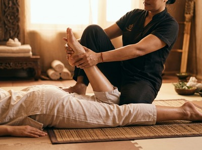

If tension has settled deep into your muscles and you need more than rest to shift it, Thai oil massage offers targeted relief with a lasting effect.
Thai Massage Greenock brings this treatment to Inverclyde for anyone carrying the physical weight of a demanding week.
Thai oil massage is a hands-on treatment that combines flowing strokes with warm base oils and focused pressure. It draws on traditional Thai technique while using oil to warm the muscles and soften the skin.
The therapist works with gliding, kneading, and rhythmic movements to ease tension, improve circulation, and encourage real muscular release. Unlike traditional Thai massage, which is done fully clothed on a mat, Thai oil massage is carried out on a treatment table. Clients undress to their comfort level and are covered with towels throughout.

The oil is not merely a lubricant. Warm base oil lets the therapist work more deeply into muscle tissue without friction. This helps tight areas respond faster and more fully.
Pressure is adjusted throughout the session depending on what your body needs.
This treatment suits anyone who carries physical tension in daily life. Desk workers with tight shoulders and a stiff lower back will benefit. So will people recovering from physical fatigue.
If you find deeper pressure more comfortable when applied through oil, this treatment is a strong fit. It is also a good starting point for first-timers who want the benefits of Thai technique without the active stretching of a traditional session.
Book your session today and let Jariya tailor the treatment to what your body actually needs.
Sessions run for 60 or 90 minutes. Before the treatment begins, Jariya will ask a few short questions about any areas of concern, your pressure preference, and how you have been feeling. This lets her shape the session to your body rather than follow a fixed routine.
During the session you will lie on a comfortable treatment table. Warm oil is applied in long, confident strokes before Jariya works deeper into areas holding tension.
Most clients feel noticeably looser by the halfway point. Afterwards, many people describe a mix of calm and physical lightness that lasts well beyond the session itself.
At Thai Massage Greenock, every treatment is delivered by Jariya Malone. She is a certified therapist trained at Bangkok's Wat Po temple — the recognised home of traditional Thai massage.
She keeps detailed notes from every session, so each visit builds on the last. You can also explore Thai aromatherapy massage or traditional Thai massage if you would like to compare treatments before booking.
You will be asked to remove your outer clothing. Most clients keep their underwear on and are covered with towels throughout the session. Only the area being worked on is ever uncovered. Jariya will talk you through this before the treatment starts so there are no surprises.
Sessions are available in 60 or 90 minutes. A 60-minute session covers the main areas of tension effectively. A 90-minute session allows for more thorough work across the full body, which is particularly useful if you carry tension in multiple areas or want a deeper overall treatment.
Most people leave feeling calm, physically lighter, and noticeably less tense. Some clients experience mild muscle soreness for a day if the pressure was firm in areas that were particularly tight. Drinking water after your session helps your body process the treatment and clears any post-massage fatigue.
For general upkeep and stress relief, once or twice a month works well for most people. If you are dealing with a specific area of tension or recovering from physical strain, more frequent sessions in the short term can help reset things faster. Jariya will advise based on what she finds during your first session.
Traditional Thai massage is done fully clothed on a floor mat. It focuses on assisted stretching, acupressure, and work along the body's sen energy lines. Thai oil massage uses warm oil on a treatment table and combines flowing strokes with targeted pressure. Both are rooted in Thai technique. Thai oil massage tends to feel more deeply relaxing, while traditional Thai massage is more active and mobilising.
It is one of the most accessible treatments for people new to massage. The use of oil and flowing strokes makes the experience gentler and more intuitive than a traditional Thai massage. Pressure is always adjusted to your comfort. Just let Jariya know it is your first session and she will take it from there. Book online now and she will be in touch to confirm your appointment.